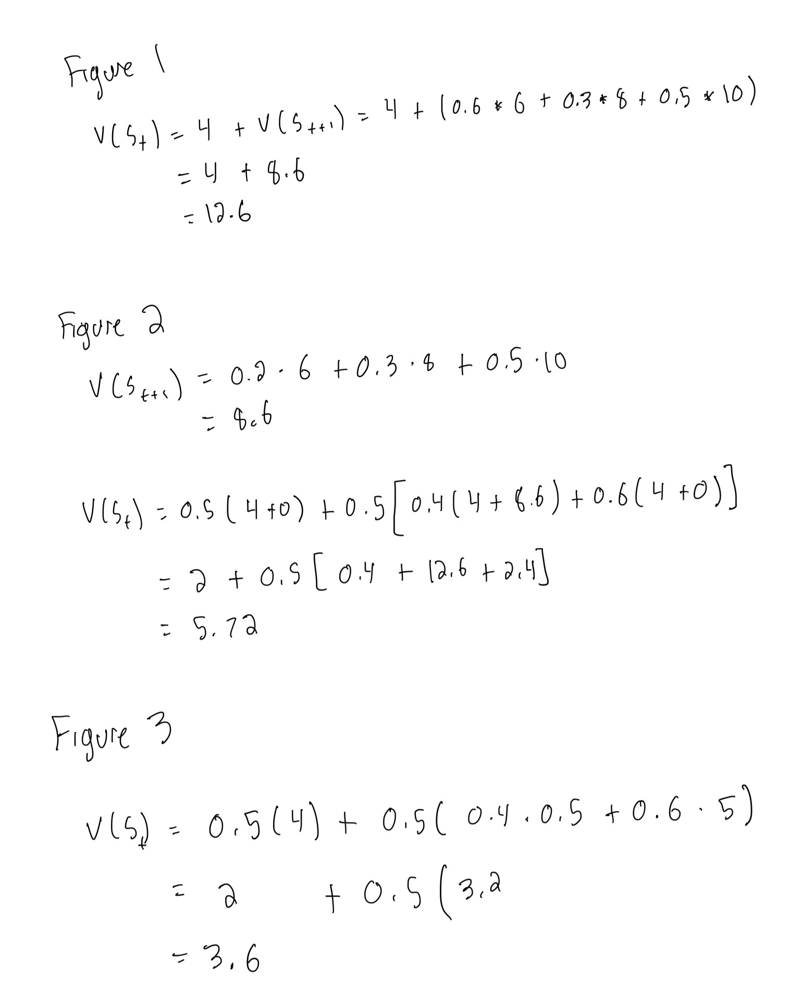
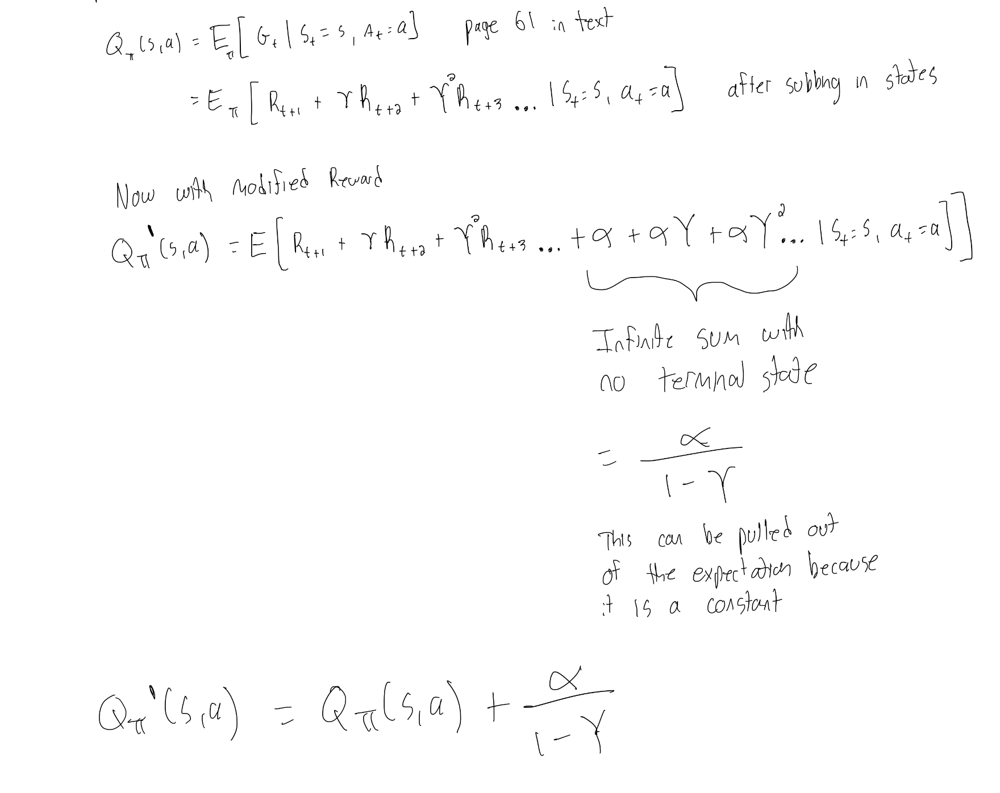
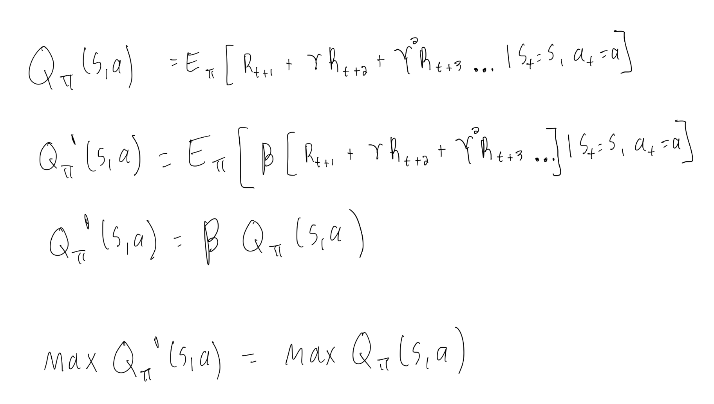
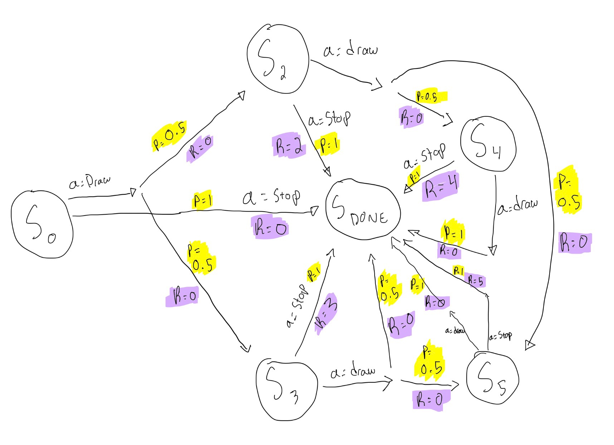
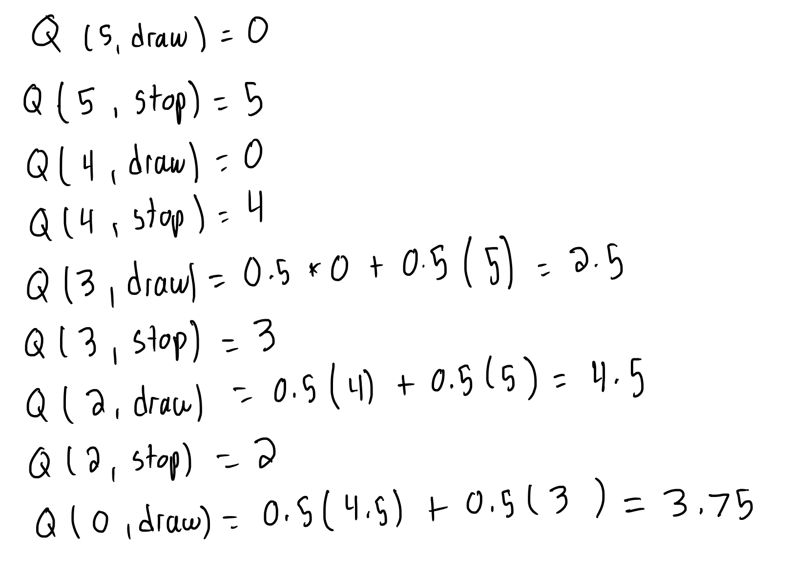
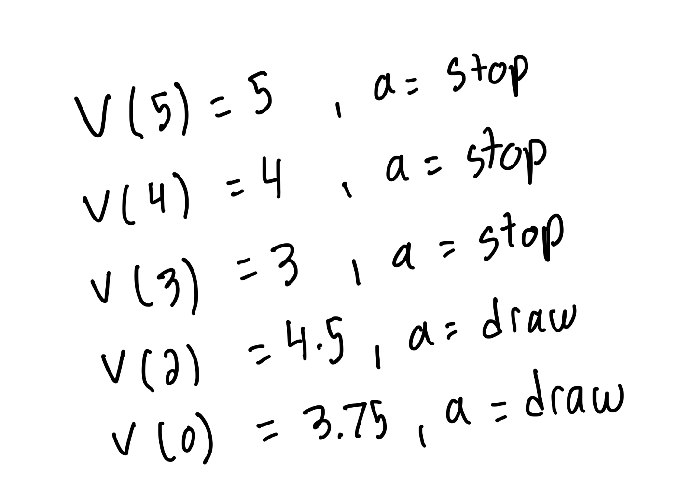

ELEN 6885 Assignment 1 - Trevor Gordon¶
Problem 1¶
Consider the following 2-armed bandit problem: the first arm has a fixed reward 0.3 and the second arm has a 0-1 reward following a Bernoulli distribution with probability 0.6, i.e., arm 2 yields reward 1 with probability 0.6. Assume we selected arm 1 at t = 1, and arm 2 four times at t = 2, 3, 4, 5 with reward 0, 1, 0, 0, respectively. We use the sample-average technique to estimate the action-value, and then use it to guide our choices starting from t = 6.
1. [5 pts] Which arm will be played at t = 6, 7, respectively, if the greedy method is used to select actions?
To solve this problem we need to start by calculating the estimated value of action for both arms at time 6. We can average the rewards seen by each arm to calculate the expected rewards.
So, for t=6 we will choose arm 1. Because our reward from arm 1 is constant at 0.3, and we won’t have any new data from arm 2, our expected rewards for t=7 will be the same and we will choose arm1 for t=7.
2. [10 pts] What is the probability to play arm 2 at t = 6, 7, respectively, if the ε-greedy method is used to select actions (ε = 0.1)?
If the ε-greedy method is used we will select the arm with the current best expected reward (arm 1) with value (1-ε) + ε/N = 0.9 + 0.1/2 = 0.95 probability. We will select the other arms with ε/N = 0.05. So the probability of playing arm 2 at t=6 = 0.05
For t=7 we have to look at all the possibilities of what might happen.
Arm 1 could be selected (with probability 0.95) in which case the rewards don’t change and we still select arm 2 with probability 0.05
Arm 2 could be selected (with probability 0.05) and we get a reward of zero (0.4 liklihood) so the return for arm 2 is updated from 0.25 to 0.2. The rewards don’t change and we still select arm 2 with probability 0.05
Arm 2 could be selected (with probability 0.05) and we get a reward of 1 (0.6 liklihood) so the return for arm 2 is updated from 0.25 to 0.4. In this case this becomes the highest reward so we select arm 2 with liklihood 0.95
Adding all these together, the liklihood of selecting arm 2 at t=7 is = (0.95 * 0.05) + (0.05 * 0.4 * 0.05) + (0.05 * 0.6 * 0.95) = 0.077
3. 3. [5 pts] Why could the greedy method perform significantly worse than the ε-greedy method in the long run?
The greedy method perform significantly worse than the ε-greedy method in the long run because it may never have tested the best arm. It has no incentive to explore untested options.
Problem 2¶
For the softmax action selection, show the following.
1. [5 pts] In the limit as the temperature τ → 0, softmax action selection becomes the same as greedy action selection.
Let the best greedy action be Ag. To take this limit we should multiply the numerator and denominator by -exp(Ag) so that we can evaluate the limit. After doing this we can see that the exp in the numerator will always be negative for actions that aren’t the greedy action. In this case we get the exp of a large negative number which becomes zero and the probability of picking that action becomes zero.
But, when our action is the greedy action we get a cancellation and get the exp of zero which becomes 1. Following this, we get a probability of 1 of choosing this action.
2. [5 pts] In the limit as τ → ∞, softmax action selection yields equiprobable selection among all actions. As τ → ∞ the numerator approaches 1. Furthermore, each of the summed terms in the denominator approaches 1 and each action has a proability of 1/n.
3. [5 pts] In the case of two actions, the softmax operation using the Gibbs distribution becomes the logistic (or sigmoid) function commonly used in artificial neural networks. TODO: The second formula isn’t formatting correctly
In the case f two actions, the softmax operation becomes the sigmoid function where the input is a decaying difference between the rewards of the two actions.
Problem 3¶
Suppose we have a sequence of returns G1, G2, · · · , Gn−1, all starting in the same state and each with a corresponding random weight Wi, i = 1,2,··· ,n − 1. We wish to form the estimate n−1 WkGk k=1 Vn= n−1W ,n≥2,
and keep it up-to-date as we obtain an additional return Gn. In addition to keeping track of Vn, we must maintain for each state the cumulative sum Cn of the weights given to the first n returns. Show that the update rule for Vn+1, n ≥ 1 is V =V +WnG −V, n+1 n C n n n and where C0 = 0 (and V1 is arbitrary and thus need not be specified).
Solution:
Given:
We can determine:
Problem 4¶
Compute the state value for St in all the MDPs in Fig. ?? – ??. The decimal number above lines refers to the probability of choosing the corresponding action. The value r refers to reward, which can be deterministic or stochastic. Assume γ = 1 for all questions and all terminal states (i.e., no successors in the graph) always have zero values.
Solution: Using the Bellman equation we can work backwards from the terminal states to calculate the state values.

Problem 5¶
Given an arbitrary MDP with reward function Ras and constants α and β > 0, prove that the following modified MDPs have the same optimal policy as the original MDP.
1. Everything remains the same as the original MDP, except it has a new reward function α + Rs . Assume that there is no terminal state and discount factor γ < 1.
In this example we are adding a constant reward to all states. Starting with the Bellman Expectation Equation we then add in the constant reward alpha. As there are no terminal states we can rearrange the infinite sum then pull it out of the equation because it is a constant.

2. Everything remains the same as the original MDP, except it has a new reward function β · Rs .
For the second part we multiple the reward by a constant so we can easily take this out of the original expectation.

In both of these cases the orginal Q function simply has a constant or is multiplied by a constant and so the location of the maximum is unchanged.
Problem 6¶
In a card game, you repeatedly draw a card (with replacement) that is equally likely to be a 2 or 3. You can either Draw or Stop if the total score of the cards you have drawn is less than 6. Otherwise, you must Stop. When you Stop, your reward is equal to your total score (up to 5), or zero if you get a total of 6 or higher. When you Draw, you receive no reward. Assume there is no discount (γ = 1). We formulate this problem as an MDP with the following states: 0, 2, 3, 4, 5, and a Done state for when the game ends.
Solution:
1. What is the state transition function and the reward function for this MDP?
The state transitions are highlighted in yellow below. The corresponding rewards are highlighted in purple. The rewards are always equal to zero expect when the rewards are equal to the value of the state when the action chosen is DONE.

2. What is the optimal state-value function and optimal action-value function for this MDP? (Hint: Solve Bellman optimality equation starting from states 4 and 5.)
We can work backwards from states 4 and 5 and get the values of each state action pair.
Values: 
And the optimal action value function: 
3. What is the optimal policy for this MDP?
As shown above, the optimal policy is to draw if in state 0 or 2 and to stop if you are in any of the other states.